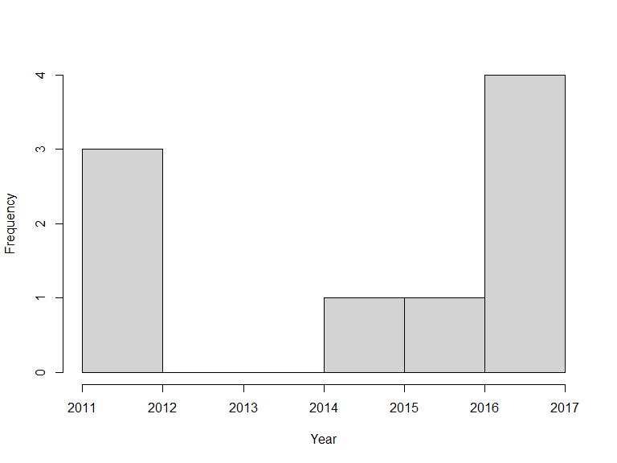

Introduction to SBDI4R
Alejandro Ruete and Debora Arlt
2020-10-02
Source:vignettes/SBDI4R.Rmd
SBDI4R.RmdUsing SBDI4R
Lets assume you have already installed the package as shown in the main site .
The SBDI4R package must be loaded for each new R session:
library(SBDI4R)
#> This is a wrapper for the package ALA4R designed to work with data hosted by the Swedish Biodiversity Data Infrastructure (SBDI).However, the options you stored in .Rprofile if you did it so, will load automatically with the package. Then, check that we have some additional packages that we’ll use in the examples, and install them if necessary.
to_install <- c("ape", "dplyr", "ggplot2", "jpeg", "maps", "mapdata",
"maptools", "phytools", "sp", "rgeos", "tidyr", "vegan")
to_install <- to_install[!sapply(to_install, requireNamespace, quietly=TRUE)]
if(length(to_install)>0)
install.packages(to_install, repos="http://cran.us.r-project.org")#SHOULD WE BRING THE EXAMPLES FROM THE MAIN PAGE HERE? ### Example 2: Area report: what listed species exist in a given area?
Vector spatial layers (eg. Polygons) can be imported in a number of different ways. Bioatlas’ APIs take as search input polygons in the s.k. WKT (Well Known Text ). So the first step is to load a vector layer and transform it into a WKT string. First download a .zip file with different delimitations for Sweden and move it somewhere you like in your computer. We recommend you move it into your working directory (). Extract the .zip file named KommunSweref99.zip.
# library(rgdal)
# shape <- readOGR(dsn=file.path("your/path/to/file", "Kommun_Sweref99TM_region.shp"))This will only work when you set a valid filepath, and will create an object of class SpatialPolygon. You could instead use the data we kindly provided in this package
shape <- swe$Municipalities
## extract just the Municipality of Örebro
shape <- shape[shape$KnNamn=="Örebro", ]We could create the WKT string using the rgeos library:
library(rgeos)
wkt <- writeWKT(shape)Unfortunately, in this instance this gives a WKT string that is too long and won’t be accepted by the web service. Also, the shapefile we just got is projected in the coordinate system SWEREF99 TM, and the web service only accepts coordinates in a geodesic coordinate system WGS84. Instead, let’s construct the WKT string directly, which gives us a little more control over its format:
library(sp)
#> Warning: package 'sp' was built under R version 3.6.3
shape <- spTransform(shape, CRSobj = CRS("+init=epsg:4326")) ## the magic number for WGS84
lonlat <- shape@polygons[[1]]@Polygons[[1]]@coords ## extract the polygon coordinates
## extract the convex hull of the polygon to reduce the length of the WKT string
temp <- chull(lonlat)
lonlat <- lonlat[c(temp, temp[1]), ]
## create WKT string
## first join each lon-lat coordinate pair
temp <- apply(lonlat, 1, function(z) paste(z, collapse=" "))
## now build the WKT string
wkt <- paste("POLYGON((", paste(temp, collapse=","), "))", sep="")Now extract the species list in this polygon:
specieslist(wkt=wkt) %>%
dplyr::arrange(desc(occurrenceCount)) %>%
dplyr::select(speciesName, species, family, occurrenceCount) %>%
head(10)#> [1] "could not find function \"%>%\""#FROM HERE ON NOT ADAPTED TO SBDI ### Example 4: Community composition and turnover
library(vegan)Define our area of interest as a transect running westwards from the Stockholm region, and download the occurrences of legumes (Fabaceae; a large family of flowering plants) in this area:
wkt <- "POLYGON((14.94 58.88, 14.94 59.69, 18.92 59.69, 18.92 58.88, 14.94 58.88))"
## define some environmental layers of interest [see sbdi_fields(fields_type = "occurrence")]
# el10011 https://spatial.bioatlas.se/ws/layers/view/more/worldclim_bio_12
# el10009 https://spatial.bioatlas.se/ws/layers/view/more/worldclim_bio_10
env_layers <- c("el10009","el10011")
## Download the data. We use the `occurrences()` function, adding environmental
## data via the 'extra' parameter.
x <- occurrences(taxon="family:Fabaceae", wkt=wkt, qa="none",
download_reason_id="testing", extra=env_layers)Convert this to a sites-by-species data.frame:
xgridded <- x$data %>%
## discard genus- and higher-level records
dplyr::filter(rank %in%
c("species", "subspecies", "variety", "form", "cultivar")) %>%
## bin into 0.5-degree bins
mutate(longitude=round(longitude*2)/2,
latitude=round(latitude*2)/2,
worldClimMeanTemperatureOfWarmestQuarter = worldClimMeanTemperatureOfWarmestQuarter /10) %>%
## average environmental vars within each bin
group_by(longitude,latitude) %>%
mutate(worldClimAnnualPrecipitation = mean(worldClimAnnualPrecipitation, na.rm=TRUE),
worldClimMeanTemperatureOfWarmestQuarter = mean(worldClimMeanTemperatureOfWarmestQuarter, na.rm=TRUE)) %>%
## subset to vars of interest
dplyr::select(longitude, latitude, species,
worldClimAnnualPrecipitation,
worldClimMeanTemperatureOfWarmestQuarter) %>%
## take one row per cell per species (presence)
distinct() %>%
## calculate species richness
mutate(richness=n()) %>%
## convert to wide format (sites by species)
mutate(present=1) %>%
do(tidyr::spread(data=., key=species, value=present, fill=0)) %>%
ungroup()
## where a species was not present, it will have NA: convert these to 0
sppcols <- setdiff(names(xgridded),
c("longitude", "latitude",
"worldClimAnnualPrecipitation",
"worldClimMeanTemperatureOfWarmestQuarter",
"richness"))
xgridded <- xgridded %>% mutate_at(sppcols, function(z) ifelse(is.na(z), 0, z))The end result:
xgridded
#> # A tibble: 161 x 330
#> longitude latitude worldClimAnnual~ worldClimMeanTe~ richness `Lathyrus japon~ `Astragalus fil~ `Astragalus pen~
#> <dbl> <dbl> <dbl> <dbl> <int> <dbl> <dbl> <dbl>
#> 1 -167 60 673 8.5 1 1 0 0
#> 2 -157 58.5 505 11.7 1 1 0 0
#> 3 -150. 60 1354 11.2 1 1 0 0
#> 4 -134 60.5 268 10.1 1 0 1 0
#> 5 -114 59 387 14.5 1 0 0 1
#> 6 -113 59.5 367 14.2 2 0 0 0
#> 7 -112. 59 376 14.8 3 0 0 0
#> 8 -112. 59.5 360 14.7 1 0 0 0
#> 9 -79 59 365 7.6 1 0 0 1
#> 10 -78 58.5 NaN NaN 1 1 0 0
#> # ... with 151 more rows, and 322 more variables: `Astragalus iodanthus` <dbl>, `Lathyrus ochroleucus` <dbl>,
#> # `Astragalus danicus` <dbl>, `Astragalus frigidus` <dbl>, `Astragalus thionanthus` <dbl>, `Aeschynomene
#> # indica` <dbl>, `Oxytropis podocarpa` <dbl>, `Trifolium dubium` <dbl>, `Vicia orobus` <dbl>, `Anthyllis
#> # vulneraria` <dbl>, `Ononis spinosa` <dbl>, `Trifolium aureum` <dbl>, `Trifolium carolinianum` <dbl>, `Trifolium
#> # medium` <dbl>, `Trifolium repens` <dbl>, `Vicia sepium` <dbl>, `Vicia bakeri` <dbl>, `Lathyrus pratensis` <dbl>,
#> # `Vicia hirsuta` <dbl>, `Melilotus albus` <dbl>, `Melilotus altissimus` <dbl>, `Lupinus nootkatensis` <dbl>,
#> # `Medicago lupulina` <dbl>, `Lotus glaber` <dbl>, `Trifolium pratense` <dbl>, `Vicia cracca` <dbl>, `Cytisus
#> # scoparius` <dbl>, `Oxytropis campestris` <dbl>, `Lathyrus sylvestris` <dbl>, `Lotus corniculatus` <dbl>, `Trifolium
#> # nigrescens` <dbl>, `Vicia tetrasperma` <dbl>, `Trifolium micranthum` <dbl>, `Lathyrus niger` <dbl>, `Medicago
#> # falcata` <dbl>, `Vicia cassubica` <dbl>, `Lathyrus linifolius` <dbl>, `Genista tinctoria` <dbl>, `Hippocrepis
#> # emerus` <dbl>, `Trifolium fragiferum` <dbl>, `Lathyrus vernus` <dbl>, `Vicia faba` <dbl>, `Trifolium
#> # spadiceum` <dbl>, `Vicia lathyroides` <dbl>, `Astragalus glycyphyllos` <dbl>, `Lathyrus palustris` <dbl>, `Lupinus
#> # arboreus` <dbl>, `Ornithopus compressus` <dbl>, `Ornithopus pinnatus` <dbl>, `Vicia sativa` <dbl>, `Vicia
#> # villosa` <dbl>, `Lathyrus pisiformis` <dbl>, `Medicago sativa` <dbl>, `Trifolium montanum` <dbl>, `Lupinus
#> # polyphyllus` <dbl>, `Pisum sativum` <dbl>, `Trifolium incarnatum` <dbl>, `Laburnum alpinum` <dbl>, `Laburnum
#> # watereri` <dbl>, `Lathyrus tuberosus` <dbl>, `Melilotus indicus` <dbl>, `Lathyrus latifolius` <dbl>, `Lathyrus
#> # hirsutus` <dbl>, `Lathyrus sphaericus` <dbl>, `Lotus pedunculatus` <dbl>, `Robinia pseudoacacia` <dbl>, `Trifolium
#> # hybridum` <dbl>, `Vicia pannonica` <dbl>, `Vicia tenuifolia` <dbl>, `Galega orientalis` <dbl>, `Laburnum
#> # anagyroides` <dbl>, `Securigera varia` <dbl>, `Ulex europaeus` <dbl>, `Lens culinaris` <dbl>, `Lupinus
#> # luteus` <dbl>, V1 <dbl>, `Acacia dealbata` <dbl>, `Acacia longifolia` <dbl>, `Acacia paradoxa` <dbl>, `Acacia
#> # saligna` <dbl>, `Amorpha fruticosa` <dbl>, `Anthyllis montana` <dbl>, `Anthyllis variegata` <dbl>, `Apios
#> # americana` <dbl>, `Arachis hypogaea` <dbl>, `Argyrocytisus battandieri` <dbl>, `Astragalus alopecurus` <dbl>,
#> # `Astragalus chamaeleuce` <dbl>, `Astragalus dactylocarpus` <dbl>, `Astragalus exscapus` <dbl>, `Astragalus
#> # fissuralis` <dbl>, `Astragalus hymenostegis` <dbl>, `Astragalus leontinus` <dbl>, `Astragalus leucolobus` <dbl>,
#> # `Astragalus mongholicus` <dbl>, `Astragalus musiniensis` <dbl>, `Astragalus nevadensis` <dbl>, `Astragalus
#> # norvegicus` <dbl>, `Astragalus onobrychis` <dbl>, `Astragalus oreades` <dbl>, ...Now we can start to examine the patterns in the data. Let’s plot richness as a function of longitude:
library(ggplot2)
ggplot(xgridded, aes(longitude, richness)) +
geom_point() +
theme_bw()
Species richness as a function of environment:
ggplot(xgridded, aes(worldClimMeanTemperatureOfWarmestQuarter ,
worldClimAnnualPrecipitation,
colour=richness)) +
scale_colour_distiller(palette="Spectral") +
geom_point(size=8) +
theme_bw()
Higher species richness in hottest areas.
How does the community composition change along the transect? Use clustering:
library(vegan)
## Bray-Curtis dissimilarity
D <- vegdist(xgridded[, sppcols], "bray")
## UPGMA clustering
cl <- hclust(D, method="ave")
## plot the dendrogram
plot(cl)
## extract group labels at the 20-group level
grp <- cutree(cl, 20)
## coalesce small (outlier) groups into a single catch-all group
sing <- which(table(grp)<5)
grp[grp %in% sing] <- 21 ## put these in a new combined group
grp <- sapply(grp, function(z)which(unique(grp)==z)) ## renumber groups
xgridded$grp <- as.factor(grp)
## plot
## colours for clusters
thiscol <- c("#1f77b4", "#ff7f0e", "#2ca02c", "#d62728", "#9467bd", "#8c564b", "#e377c2",
"#7f7f7f", "#bcbd22", "#17becf")
ggplot(xgridded, aes(longitude, latitude, colour=grp)) +
geom_point(size=5) +
scale_colour_manual(values=thiscol) +
theme_bw()
## or a slightly nicer map plot
library(maps)
library(mapdata)
#> Warning: package 'mapdata' was built under R version 3.6.3
map("worldHires", "Sweden",
# xlim=c(105, 155), ylim=c(-45, -10),
col="gray90", fill=TRUE)
with(xgridded, points(longitude, latitude, pch=21, col=thiscol[grp], bg=thiscol[grp], cex=0.75))